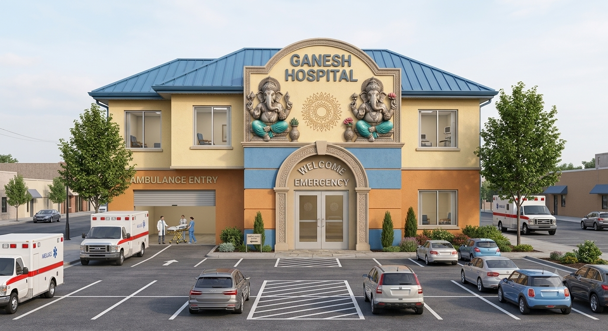

About us
It is one of Pune's best-known multispecialty hospitals, established in 1959 by Dr. Harihar. Grant as a small nursing home. Over the decades, it has grown into a large healthcare network.It has major hospital campuses at Sassoon Road, Hinjawadi, and Wanowrie in Pune, along with several peripheral centers. The hospital is accredited by NABH and NABL, and is also a teaching hospital affiliated with medical education programs.

1. Cardiac Sciences & Coronary Care (Heart Care)
Cardiac Sciences & Coronary Care provides comprehensive diagnosis, treatment, and prevention of heart-related diseases. Our experienced cardiologists and cardiac surgeons use advanced technology to deliver accurate and effective care. We specialize in treating coronary artery disease, heart attacks, heart failure, and irregular heart rhythms. Services include ECG, Echocardiography, TMT, Angiography, and Angioplasty. We also perform minimally invasive cardiac procedures and complex heart surgeries. Our coronary care unit (CCU) is equipped to handle cardiac emergencies 24/7. Preventive heart health check-ups and lifestyle counseling help reduce future risks. Our goal is to improve heart health and ensure a better quality of life for every patient.
.png)
2. Cancer Services (Medical, Surgical & Radiation Oncology)
Our Cancer Services offer complete and personalized cancer care through a multidisciplinary approach. Medical Oncology provides chemotherapy, immunotherapy, hormone therapy, and targeted treatments. Surgical Oncology focuses on removing tumors using advanced and minimally invasive surgical techniques. Radiation Oncology uses precision technology to destroy cancer cells while protecting healthy tissues. We provide early cancer screening, accurate diagnosis, and personalized treatment planning. Our team supports patients throughout every stage of treatment and recovery. Rehabilitation, pain management, and palliative care services improve comfort and quality of life. We are committed to delivering compassionate, evidence-based cancer care with the best possible outcomes.
.png)
3. Neuro Sciences (Neurology & Neurosurgery)
The Neuro Sciences department specializes in diagnosing and treating disorders of the brain, spine, and nervous system. Our neurologists manage conditions such as stroke, epilepsy, migraines, Parkinson's disease, and multiple sclerosis. Neurosurgeons perform advanced surgeries for brain tumors, spinal disorders, trauma, and nerve injuries. We use modern imaging and diagnostic technologies for accurate evaluation and treatment planning. Emergency stroke care and neurocritical care services are available for life-threatening conditions. Minimally invasive surgical techniques help reduce recovery time and improve outcomes. Rehabilitation programs support patients in regaining mobility and independence. Our focus is on providing comprehensive neurological care with compassion and expertise.
.png)
4. Orthopaedics & Joint Replacement
Our Orthopaedics department provides expert care for bones, joints, muscles, ligaments, and sports injuries. We specialize in knee, hip, shoulder, and elbow joint replacement surgeries using advanced implants and techniques. Our orthopedic surgeons treat fractures, arthritis, spinal disorders, and trauma with personalized treatment plans. Arthroscopic procedures offer minimally invasive solutions for joint injuries and ligament tears. Physiotherapy and rehabilitation programs help patients recover strength and mobility after treatment. We emphasize pain management, faster recovery, and improved physical function. Modern diagnostic tools ensure accurate assessment of orthopedic conditions. Our goal is to restore mobility, reduce pain, and improve overall quality of life.

5. Gastroenterology & Digestive Diseases
The Gastroenterology department provides specialized care for diseases affecting the digestive system, liver, pancreas, and gallbladder. We diagnose and treat conditions such as acid reflux, ulcers, IBS, hepatitis, fatty liver disease, and pancreatitis. Advanced endoscopy and colonoscopy services help detect digestive disorders at an early stage. Our specialists provide expert management for inflammatory bowel disease and gastrointestinal bleeding. We use modern diagnostic technology to deliver accurate and timely treatment. Nutritional counseling and lifestyle guidance are provided to support long-term digestive health. Personalized treatment plans focus on relieving symptoms and preventing complications. Our commitment is to ensure healthy digestion and improved overall well-being.

Our Vision
Our Vision
To become the most trusted and patient-centric healthcare institution by delivering exceptional medical care through innovation, advanced technology, compassionate service, and continuous excellence. We aspire to improve the health and well-being of every individual by making quality healthcare accessible, affordable, and reliable.
Our Mission
Our Mission
- To provide high-quality, ethical, and affordable healthcare services.
- To ensure patient safety through advanced medical technology and best clinical practices.
- To deliver compassionate and personalized care with dignity and respect.
- To promote medical education, research, and continuous professional development.
- To create a healthy community through preventive healthcare and awareness programs.
- To maintain excellence in clinical outcomes while ensuring patient satisfaction.
HISTORY
HISTORY
Founded in 1959 by the visionary physician Dr. Harihar Grant, Ganesh Hospital began its journey as a modest nursing home dedicated to serving the healthcare needs of Pune's growing community.Today, the hospital proudly serves patients through its advanced campuses at Sassoon Road, Hinjawadi, and Wanowrie, along with multiple satellite centers that extend quality healthcare to surrounding communities.